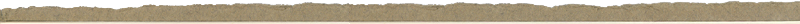
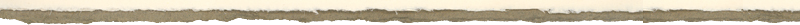

|  | ||
|
Klopstocks Oden Die moralische Wochenschrift ›Der Nordische Aufseher‹ wurde von Johann Andreas Cramer (*1723 †1788) herausgegeben. Die erste Nummer erschien am 5. Januar 1758, die letzte drei Jahre später, am 8. Januar 1761.1 Die einzelnen Nummern, von denen sich kein Exemplar erhalten hat,2 wurden zu drei Bänden im Quartformat zusammengefasst, die in den Jahren 1758, 1759 und 1761 in Buchform veröffentlicht wurden.3 Bereits im zweiten Band dieser Quartausgabe berichtet Cramer, dass eine neue Ausgabe in »kleinerem Format und mit kleinerem Drucke veranstaltet werde.«4 Diese zweite Ausgabe erschien dann in den Jahren 1760, 1762 und 1770 im Oktavformat. Von Klopstocks lyrischen Beiträgen trägt einzig die Ode ›Das Anschaun Gottes‹ einen Titel; die restlichen Oden werden, dem Ordnungsschema der Wochenschrift folgend, als Stücke bezeichnet, die mit einem Numerus Currens versehen sind. Auf diese Zählung folgen die Angabe des Wochentages und des Datums, sowie eine den Oden jeweils vorangestellte Einleitung, die sich auf deren Inhalt bezieht. Die Titel bzw. Beschreibungen der Oden wurden gesondert in einem Index am Ende des dritten Bandes beigegeben.5 Die Ode ›Der Erbarmer‹ erschien 1759 als 102. Stück im zweiten Band des Nordischen Aufsehers. Im Index wird sie mit der auf sie folgenden Ode, dem 103. Stück, unter dem Titel ›Oden über die Zärtlichkeit der göttlichen Liebe‹ zusammengefasst und fälschlicherweise nicht Klopstock, sondern Cramer zugeschrieben. Erst später und einhergehend mit einer Überarbeitung, die Klopstock für den Druck seiner Oden von 1771 vornimmt,6 erhalten die beiden Oden ihre eigenständigen Titel: ›Der Erbarmer‹ und ›Die Glückseligkeit Aller‹. Auch in der letzten Ausgabe seiner Werke aus dem Jahre 1798 werden diese Titel beibehalten. |
1 Vgl. Phoebe M. Luehrs, Der Nordische Aufseher. Ein Beitrag zur Geschichte der moralischen Wochenschrift, Heidelberg 1909, 17. (Dissertation) 2 Katrin Kohl nimmt an, dass es sich bei den Quartbänden von 1758/59/61 um einen unveränderten Nachdurck der ›Erstausgabe‹ der Wochenschrift handelt. Vgl. Katrin M. Kohl, Rhetoric, the Bible, and the Origins of free Verse. The Early “Hymns” of Friedrich Gottlieb Klopstock, Berlin/New York 1990, 99. 3 Vgl. Luehrs, 17f. 4 Luehrs, 18. 5 Eine redaktionelle Beteiligung Klopstocks ist jedoch nicht bewiesen. Vgl. Kohl, 2. 6 Oden Hamburg. 1771. Bey Johann Joachim Christoph Bode. |
|
Klopstocks Oden bei Göschen In der ›Ausgabe letzter Hand‹, die ab 1798 in Leipzig bei Georg Joachim Göschen (*1752 †1828) erschien, ist die Ode in ihrer revidierten Fassung von 1771 abgedruckt. Durch Klopstocks Überarbeitung wurden die freirhythmischen Oden des Nordischen Aufsehers, deren Verse zu »quasistrophischen Einheiten wechselnder Länge gruppiert waren«1, in »strophischere Gebilde von vier Versen«2 eingeteilt. Die Gliederung der Strophen wird nicht mehr primär durch deren Inhalt bestimmt und die Verse werden zu einer »mehr ästhetischen als rhetorischen Einheit«.3 Auch die bei Göschen erschienenen Werke Klopstocks wurden, wie Göschen in einem Brief vom 3. März 1795 erklärt,4 in mehreren Ausgaben gedruckt: Ich würde 2 Ausgaben eine in Quarto und eine in 8° auf dem schönsten Velin Papier sehr splendid und von jeder nur wenige Exemplaria für die Begüterten drucken. Überdies eine Ausgabe für die unbemittelte größere Claße von Lesern sehr wohlfeil um den Nachdruck zu steuern. Die Formatangaben Göschens weichen von der Charakterisierung der Bindung ab, da er nicht auf ganze, sondern halbierte Bogen druckte. Daher ist die Quartausgabe auf Velinpapier eine Folio-, die Großoktavausgabe auf Schreibpapier eine Oktavausgabe.5 Die ausführlichen Beschreibungen der hier kollationierten Drucke sind in HKA, Addenda III/1 unter Nr. 1 und Nr. 11 zu finden. |
1 Leif Ludwig Albertsen, Die freien Rhythmen. Rationale Bemerkungen im allgemeinen und zu Klopstock, Aarhus 1971, 137. 2 Albertsen, 138. 3 Albertsen, 147. 4 Friedrich Gottlieb Klopstock, Briefe 1795–1798, hg. v. Rainer Schmidt, Bd. 1: Text, Berlin/New York 1993, Nr. 3, 24–77. [= HKA, Briefe IX/1.] 5 Vgl. Christiane Boghardt, Martin Boghardt, Rainer Schmidt, Die zeitgenössischen Drucke von Klopstocks Werken. Eine deskriptive Bibliographie, Bd. 1: Nr. 1–2004, Berlin/New York 1981, Nr.1. [= HKA, Addenda III/1.] |
|
|
Informationen zur digitalen Edition Die digitale Edition bietet beide Fassungen der Ode ›Der Erbarmer‹. Für die erste Fassung wurden die Drucke, die 1759 in der Quart- und 1762 in der Oktavausgabe des im ›Nordischen Aufsehers‹ erschienen, kollationiert. Sie sind, bis auf die ausgelassene Datumsangabe in der Quartausgabe, textidentisch. Die Einrichtung der Drucke unterscheidet sich lediglich durch vom kleineren Format bedingte Umbrüche. Für die zweite Fassung der Ode wurden die Drucke von 1798, die in einer Folio- und einer Oktavausgabe bei Göschen erschienen, kollationiert. Auch diese Drucke sind textidentisch. In der Oktavausgabe kommt es zu formatbedingten Umbrüchen mehrerer Verse. Der Aufbau der Seite ermöglicht über die Navigationsleiste ein schnelles Umschalten zwischen den beiden Fassungen. Der Anwender kann jedoch auch ein weiteres Browser-Fenster öffnen, um beide Fassungen nebeneinander zu stellen. Gleiches gilt für die Faksimiles die über das linke Navigationsmenü aufgerufen werden können. Mit klick auf die Abbildung öffnet sich – je nach Browsereinstellung – entweder ein weiteres Fenster oder ein neuer Tab, mit einer größeren Ansicht des Faksimiles, die sich auch für den Druck eignet. Die Einrichtung der digitalen Edition folgt der Typographie des Drucks. |
||
|  | ||